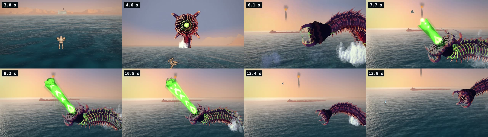

Steel Tide clips
Viewer exports from the live build M83 (8b81824061). Each clip has three forms: a still sheet with the seconds clock (always shows), the video, and a GIF. Version 2, 11-15.
1. Leviathan jaw grab (14 s)
The live grab. The beam-end fix (taper to the target, orb impact) is not in this build yet.

Video (2.9 MB, 720p, no sound):
Open the video on its own (2.9 MB)Open as a GIF (5.3 MB)2. Leviathan finisher (28 s)
The last 4 seconds are the mech standing after the camera returns.

Video (7.3 MB, 720p, no sound):
Open the video on its own (7.3 MB)Open as a GIF (11.2 MB)3. Ocean titan (13 s)
The hull alone at sea, camera orbit. No moves are fired in this row.
Video (2.0 MB, 720p, no sound):
Open the video on its own (2.0 MB)Open as a GIF (6.9 MB)